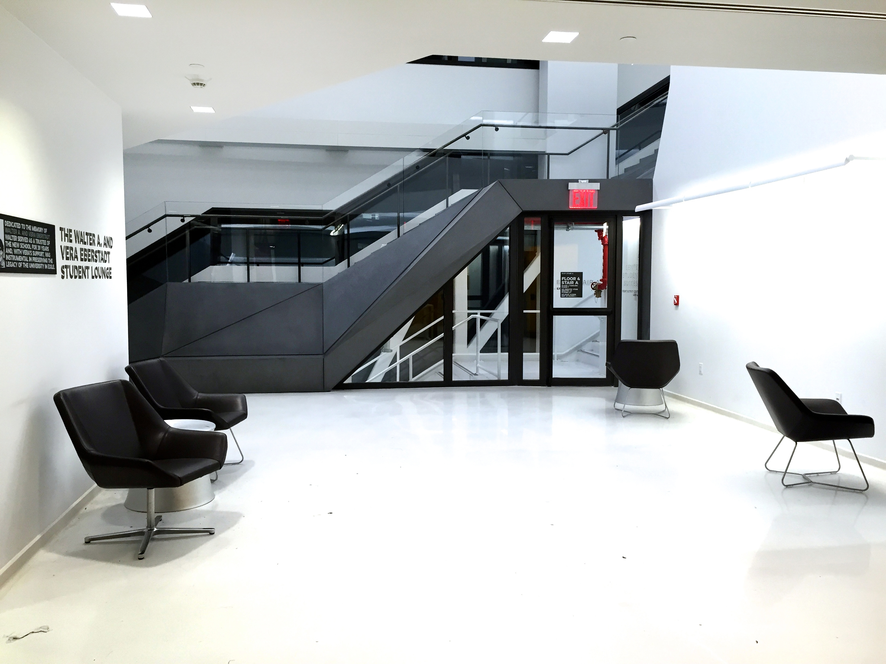

The New School Wants You to Take the Stairs
Tamar Lapin
Google, Facebook, New School and Beyond
Through heavy glass doors, past a large open vestibule, sits a commandeering staircase-
front and center. “Welcome to The New School: where we encourage you to take the stairs,” is
what the entrance to The New School’s new University Center (UC) seems to scream. The New
School wants you to take the stairs, but not for the reason you might think. Wondering where the
elevators went? They are purposely hidden away from the front doors off to the side of the
building. No this is not a health campaign and although the UC is one of the most sustainable
buildings in New York City, the reason for the prominence of these stairs and their landings is an
attempt to use openplan design by New School designers and the architects at Skidmore,
Ownings, and Merill (SOM).
It’s not just The New School. From America’s top techcompanies use or are planning to
use openplan design for their offices. Open plan design makes use of large accessible spaces
and does away with traditional, closeddoor offices. It is meant to promote communication and
collaboration by literally breaking down walls. Even as more and more studies come out
disclaiming the benefits of openplan design, companies like Google and Facebook seem to have
big plans for it.
“The open plan is meant to reflect an intention for open discourse,” Andrew Bernheimer,
Principal of Bernheimer Architecture and Assistant Professor and the Director of the Master of
Architecture program at Parsons said. He described his office, which makes use of openplan
design, as a single room with a long communal table at which ten people work and collaborate.
“the driving concept was that we all collaborate and therefore an open plan without barriers would
foster conversation and critique,” he said.
Mark Zuckerberg’s plan for Facebook’s new offices is another attempt from Zuckerberg to
make the world “a more open place.” Designed by famed architect Frank Gehry, the Facebook
‘campus’ (designed to mimic a college campus) will be comprised of a single 10acre room with
movable furniture. Once completed in 2016, the new office will be the largest openplan office in
the world. Even with its seemingly lavish use of space, “it’s emphasis is on functionality, rather
than extravagance,” a Facebook spokesperson said in a project description.
Along with Facebook’s grand scheme, Google is also pioneering openplan space design
with their project for a new building set to open in 2015 in Silicon Valley. In 2013, construction
began on the Bay View Addition to the Googleplex (google’s headquarters originally opened in
2006). The 1.1 million square foot project will be comprised of nine rectangular buildings
connected by bridges and surrounded by courtyards. The building is also supposed to promote
communication, with no employees being further than a twominute walk away from each other.
The openplan spaces at The New School are also meant to be collaborative spaces for
student, as collaboration is something that brands the school.
“While the work [at The New School] is sometimes (but not universally) collaborative, the
open plan is meant to promote visibility and similar discourse, between student and teacher and
between the students themselves,” Bernheimer said in regards to the New School’s use of open plan
 A Brief History of The Open Plan Office
A Brief History of The Open Plan Office
The first openplan office was the Larkin Administration Building (built: 1906, demolished:
1950) in New York City, designed by modernist architect Frank Lloyd Wright. The design of the
building was based on a factory floor plan with very few walls. Workers were prohibited from
speaking — a far cry from today’s openplan offices where the goal is to promote communication.
And while 20thcentury bosses may have used openplan design to closely supervise their
employees and assert power (by having their own separate offices), advocates say that more
recent openplan offices enhance collaboration and break down hierarchies.
But some researchers disagree. Recent studies have found that openplan offices may not
be as beneficial as previously thought. While the open space may promote more interaction,
communication, and the faster spread of ideas, critics say it may also be making workers sicker
and more prone to distraction.
“Personal control is strongly related to office employees' environmental satisfaction, as
well as perception of privacy and distraction,” according to a January 2014 study published in the
journal Ergonomics. Because of the high level of noise in openplan offices, the study found that
distractions in openplan offices had negative effects on the health and cognitive abilities of
employees.
People in openplan offices also tend to take more sick leaves, according to a study in the
Scandinavian Journal of Work Environment and Health. The study found that offices set up in
openplan reported 62 percent more sick days on average than singleoccupancy offices. Two
explanations were offered: that viruses may spread more rapidly in openplan offices, and that
stress induced by lack of privacy may cause a higher rate of sickness among employees.

A New Kind of Campus
But the designers of the University Center believe in the advantages of the openplan
approach. “We used active design principles to encourage people to walk and interact more with
each other,” said Colin Koop, SOM’s senior design architect on the University Center project.
Koop named the staircases and landings as a way to “display the use of interconnection,” and
said the spaces they provided would do the same thing a quad does on a traditional college
campus — promote interaction.
“Before the University Center was built, The New School lacked such places for informal
sitting, or gathering, or working, the kind of spaces usually found in traditional campuses as
quadrangles or student centers,” added Lia Gartner, Vice President for Design, Construction and
Facilities Management at The New School.
Koop acknowledged that the reason for the prominent staircase in the entrance was to
“barely put demand on the elevators.” Gartner added that, at first, the elevators were only meant
to go to a couple of floors each and that because of the anticipated influx of students the building
was going to need 20 of them. But the success of the stairs — easily visible and attractive — has
put less of a demand on the elevators.
The large staircase landings on every floor are meant to be open and interactive spaces,
Gartner said. “[They] do not have walls and are not scheduled, that's what makes them ‘open’,”
Gartner said. Providing this open space for chance encounters and learning, and meetings and
discussions, was always an integral goal of the design process, she said.
Because space in New York City is a luxury, Gartner continued, a further intention of the
design was to take advantage of the openplan aspects of the building by making them multi-
purposed. Thus the numerous areas that are furnished in different ways, sometimes with couches
and tables or laptop stations, all of them open to anyone at any time. The most elaborate of those
spaces, on the fifth floor, has large communal tables as well as couches and chairs that give the
place a more loungeesque feel.
In fact, students don’t even use the space for impromptu meetings and discussions. Most
of the spaces on and around the fourth and fifthfloor landings seemed to be used for individual
study. On a recent visit the only group on the fifth floor consisted of two students. Adrienne Carillo
and Victoria Boya, Parsons freshmen studying Fashion and Communication Design.
“I come here on a regular basis, it’s chill and a good place to work as well,” Carillo said,
gesturing towards the large windows. “I like that it’s so open.”
Two Parsons Communication Design students studying on the fourth floor, Antoinette
Serami and Grace Min, said they sometimes used the fifth floor communal space to meet with
other students.
“It’s a good place to meet for a group project and talk,” Serami said. They both also
mentioned rooms in the library, which can be reserved, and the lunchroom as plausible social and
study spaces. The large majority of students though, were sitting alone with earphones in.
Julia St. Clara, a BaFa student studying photography and psychology, was not one of
them.
“I like the white noise,” she said, eating lunch and using her laptop at an individual table
on the fifth floor. “I come here anytime between my classes, to eat and study. I’m usually
working,”
Koop and Gartner both say that they have received positive feedback about the openplan
design, and the University Center in general.
“It’s exciting to me,” Koop said. “Being an architect, you deal in a virtual environment, but
what you are trying to do is build a physical environment where people are engaging with each
other in a more seamless way.”